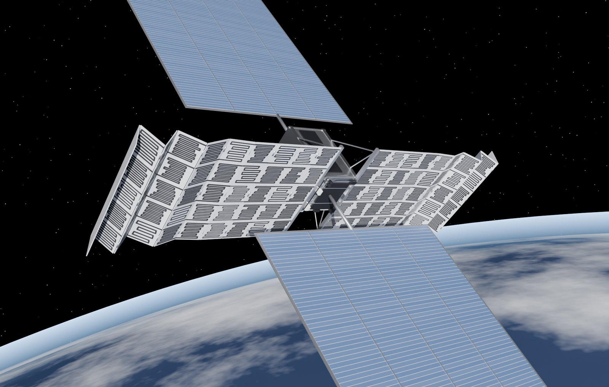

Convolutional Neural Networks
합성곱 신경망의 구조와 원리 — 컨볼루션·풀링 계층, 전이학습(ResNet), 특징맵 시각화까지 정리한 발표 자료입니다.
View PDFUndergraduate researcher · IDEA Lab
Robotics · Hanyang ERICA
Wanna become a Physical-AI Engineer — where mobility meets mechanics, control, and machine learning.
Root access to me
Ongoing research
A diffusion model designs cooling-channel tiles for orbital data-center radiators — and repairs the ones that fail instead of throwing them away.
See the project & demo →I'm a Robotics Engineering student at Hanyang University ERICA — someone who likes to understand a machine from the inside out, and then teach it to think. I'm also an undergraduate researcher at IDEA Lab (Intelligent Design for Engineering Applications Lab), where engineering design meets AI.
At the lab I work on generative design of cooling channels for orbital data-center radiators: a diffusion model that draws flow-channel tiles to a requested family and width, geometric gates that decide whether a tile is a valid flow path, and an inpainting step that repairs the failures instead of throwing them away — so the tiles can be assembled into foldable radiator panels.
My work lives at the crossroads of three fields: robotics, mechanical engineering, and AI. Mechanics tells me how things move, control tells me how to make them move on purpose, and machine learning lets them adapt to a world that never stays still. I'm chasing the point where all three meet — where physical systems don't just run, but reason.
Deep learning study during the break — slides I made and presented, shared as PDF
합성곱 신경망의 구조와 원리 — 컨볼루션·풀링 계층, 전이학습(ResNet), 특징맵 시각화까지 정리한 발표 자료입니다.
View PDF7장 코드 실습편 — 기울기 소실 시각화, IMDB에서의 RNN vs LSTM/GRU 성능 비교, 하이퍼파라미터 실험을 가설→실험→결과→해석 순서로 정리한 발표 자료입니다.
View PDF8장 성능최적화 — 배치·레이어 정규화, 드롭아웃 비율 스윕, 조기 종료와 학습률 스케줄러까지, IMDB·MNIST 실험으로 검증하며 정리한 발표 자료입니다.
View PDF"Let's build machines that understand the physics they live in."